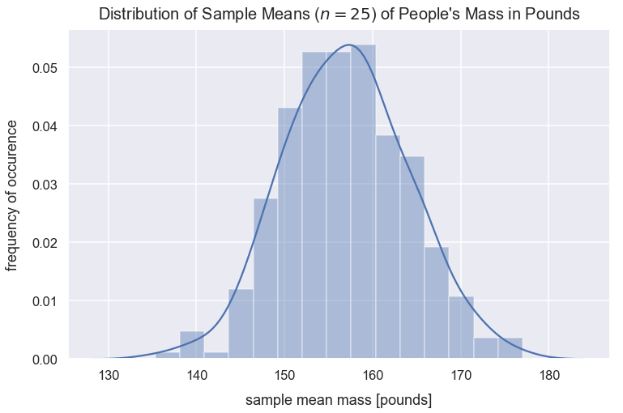
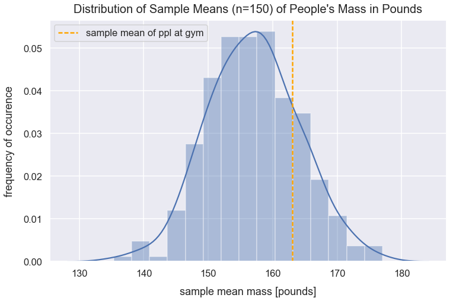
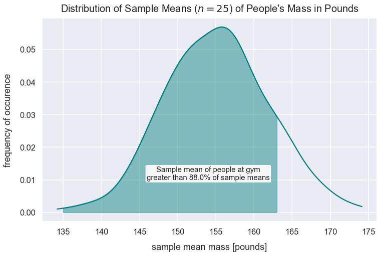
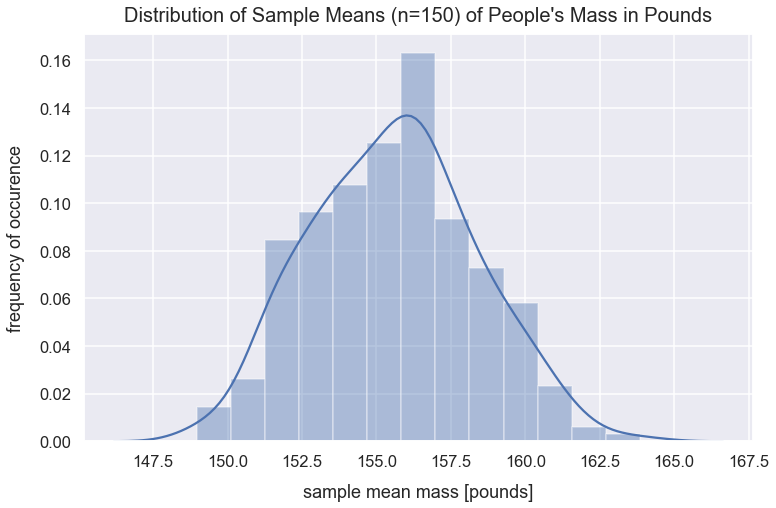

Central Limit Theorem
- Jan 4 • 12 min read
- Key Terms: z-score, statistics, standard deviation, normal distribution, python, central limit theorem
The central limit theorem is a statistcal theory that means if we take a sufficient number of random samples of sufficient size from any type of distribution with some variance, the distribution of the sample means will be a normal distribution. This new distribution is called a sampling distribution. The mean of the sampling distribution should be approximately equal to the population mean.
Import Modules
import pandas as pd
import seaborn as sns
import scipy.stats as stats
import numpy as np
import random
import warnings
import matplotlib.pyplot as plt
% matplotlib inline
Visualization styling code
sns.set(rc={'figure.figsize':(12, 7.5)})
sns.set_context('talk')
Turn Off Warnings
I turn warnings off in this post because of an issue in Scipy that will be fixed in a later version.
warnings.filterwarnings('ignore')
Generate Data of People's Mass in Pounds
Below, I generate two normal distributions using the numpy random module's normal() method of mass values for males and females. I concatenate these two arrays and assign them to the column us_people_mass_pounds in a DataFrame df_ppl_mass.
np.random.seed(42)
normal_distribution_us_male_mass_pounds = np.random.normal(loc=181, scale=24, size=6000)
normal_distribution_us_female_mass_pounds = np.random.normal(loc=132, scale=22, size=6500)
all_mass_values = np.concatenate((normal_distribution_us_male_mass_pounds, normal_distribution_us_female_mass_pounds), axis=0)
df_ppl_mass = pd.DataFrame(data={'us_people_mass_pounds': all_mass_values})
Preview df_ppl_mass.
df_ppl_mass.head()
| us_people_mass_pounds | |
|---|---|
| 0 | 192.921140 |
| 1 | 177.681657 |
| 2 | 196.544525 |
| 3 | 217.552717 |
| 4 | 175.380319 |
View Distribution of U.S. People's Mass
Use the seaborn distplot() method to create a histogram of the values in the column us_people_mass_pounds.
sns.distplot(df_ppl_mass['us_people_mass_pounds'], color="darkslategrey")
plt.xlabel("mass [pounds]", labelpad=14)
plt.ylabel("probability of occurence", labelpad=14)
plt.title("Distribution of Mass of People in U.S.", y=1.015, fontsize=20);

It's tough to characterize this distribution. It's got one large peak around \(140\) pounds, and it's not a normal distribution since there's asymmetry.
Calculate Population Summary Statistics
Calculation Population Mean
pop_mean_mass = df_ppl_mass['us_people_mass_pounds'].mean()
pop_mean_mass
155.4232805942338
Calculate Population Standard Deviation
pop_std_dev_mass = df_ppl_mass['us_people_mass_pounds'].std()
pop_std_dev_mass
33.585190883958624
Problem Setup
I later sampled \(25\) people at the gym on their mass. Their mean mass value is \(163\) pounds. I'm curious how this compares to our current population of people's mass. In order to compare this new sample of people from the gym, I need to compare it to an equivalent distribution of sample means from our population.
Create List of Sample Means with \(n=25\)
It's biased to select a single sample from our population and compare it the sample of \(25\) people because I don't know if that sample from the population is random and representative of the whole population.
Given our population mass values, I will take \(300\) samples each of \(25\) random values with replacement. For each sample, I will calculate the mean of the sample. I store all those sample mean values in the list sample_means.
sample_means = []
n = 25
for sample in range(0, 300):
sample_values = np.random.choice(a=df_ppl_mass['us_people_mass_pounds'], size=n)
sample_mean = np.mean(sample_values)
sample_means.append(sample_mean)
View Distribution of Sample Means
Let's view the distribution of the sample_means values.
sns.distplot(sample_means)
plt.title("Distribution of Sample Means ($n=25$) of People's Mass in Pounds", y=1.015, fontsize=20)
plt.xlabel("sample mean mass [pounds]", labelpad=14)
plt.ylabel("frequency of occurence", labelpad=14);

Wow! This distribution of sample means looks normal! The curve is fairly symmetrical around the central value and the median is roughly equivalent to the mean (see below). Based on the central limit theorem, sampling a sufficient number of times with a sufficient size will result in a normal distribution of sample means. This distribution above is called a sampling distribution and I'll use that name moving forward.
Calculate Sampling Distribution (\(n=25\)) Summary Statistics
Calculate Median of Sample Means
median_of_sample_means = np.mean(sample_means)
median_of_sample_means
155.12418330193915
Calculate Mean of Sample Means
mean_of_sample_means = np.mean(sample_means)
mean_of_sample_means
155.12418330193915
pop_mean_mass
155.4232805942338
This mean_of_sample_means value is roughly equivalent to our population mean value assigned to the variable pop_mean_mass. Based on the central limit theorem, this will always be the case!
Calculate Standard Deviation of Sample Means
std_dev_of_sample_means = np.std(sample_means)
std_dev_of_sample_means
6.734407481483423
Equation for Standard Deviation of Sampling Distribution
The standard deviation of sample means is more commonly called the standard error (SE). An interesting tidbit from the central limit theorem is that I can calculate the standard error by just using the population standard deviation and sample size. The equation for standard error is:
- \(\sigma\) is population standard deviation
- \(n\) is sample size
standard_error = pop_std_dev_mass/np.sqrt(n)
standard_error
6.717038176791725
std_dev_of_sample_means
6.734407481483423
This standard error value, standard_error, is the same as the value calculated above for std_dev_of_sample_means.
Compare New Sample Mean to our Sampling Distribution
Let's see how the sample of people from the gym compares to this sampling distribution. Remember, the sample mean of people from the gym was \(163\) pounds.
This value of \(163\) is a point estimate. I'd naively estimate all samples from this gym would have a mean of \(163\) pounds. However, if I were to collect additional samples from the gym, I wouldn't expect the mean of the sample means to be exactly \(163\), but perhaps they'd be close.
gym_sample_mean = 163
Visualize Gym Sample Mean Compared to Sampling Distribution
sns.distplot(sample_means)
plt.title("Distribution of Sample Means ($n=25$) of People's Mass in Pounds", y=1.015, fontsize=20)
plt.axvline(x=gym_sample_mean, linestyle='--', linewidth=2.5, label="sample mean of $n=25$", c='orange')
plt.xlabel("sample mean mass [pounds]", labelpad=14)
plt.ylabel("frequency of occurence", labelpad=14)
plt.legend();

Calculate Proportion of Sample Means Less Than Gym Sample Mean
What's the probability of seeing a sample mean with a value less than \(163\)?
Given this new sample mean of people at the gym, I can calculate the number of standard errors this value is from the mean of the sampling distribution. Let's calculate the z-score for gym_sample_mean.
I can use the following z-score equation:
- \(\bar{x}\) is the sample mean
- \(\mu\) is the population mean
- \(SE\) is the standard error calculated as \(\frac{\sigma }{\sqrt{n}}\)
z_score = (gym_sample_mean - mean_of_sample_means)/standard_error
z_score
1.172513314763173
The cdf() from the scipy package and accompanying stats module returns the proportion of values smaller than the observation inputted for a normal distribution.
prop_values_less_than_gym_sample_mean = round(stats.norm.cdf(z_score), 3)
prop_values_less_than_gym_sample_mean
0.88
print("The probability of getting a sample mean less than the gym sample mean is {0}".format(prop_values_less_than_gym_sample_mean))
The probability of getting a sample mean less than the gym sample mean is 0.88
Visualize Proportion of Sample Means Less Than Gym Sample Mean
kde = stats.gaussian_kde(sample_means)
pos = np.linspace(np.min(sample_means), np.max(sample_means), 10000)
plt.plot(pos, kde(pos), color='teal')
shade = np.linspace(135, gym_sample_mean, 300)
plt.fill_between(shade, kde(shade), alpha=0.45, color='teal',)
plt.text(x=154, y=.01, horizontalalignment='center', fontsize=15,
s="Sample mean of people at gym\ngreater than {0}% of sample means".format(round(prop_values_less_than_gym_sample_mean*100, 2)),
bbox=dict(facecolor='whitesmoke', boxstyle="round, pad=0.1"))
plt.title("Distribution of Sample Means ($n=25$) of People's Mass in Pounds", y=1.015, fontsize=20)
plt.xlabel("sample mean mass [pounds]", labelpad=14)
plt.ylabel("frequency of occurence", labelpad=14);

Effect of Sampling Size
Remember the equation for standard error is:
- \(\sigma\) is population standard deviation
- \(n\) is sample size
Create List of Sample Means with \(n=150\)
Given this equation, if \(n\) increases, the result is a smaller standard error. Below, from the population of mass values, I take \(300\) samples each of \(n=150\) (instead of previously \(n=25\)) random values. For each sample, I calculate the mean of the sample and store all these samples means in the list sample_means_n_150.
sample_means_n_150 = []
n = 150
for sample in range(0, 300):
sample_values = np.random.choice(a=df_ppl_mass['us_people_mass_pounds'], size=n)
sample_mean = np.mean(sample_values)
sample_means_n_150.append(sample_mean)
View Distribution of Sample Means
In the histogram of sample_means below, the distribution is skinner because the standard error is much smaller than when \(n=25\).
sns.distplot(sample_means_n_150)
plt.title("Distribution of Sample Means ($n=150$) of People's Mass in Pounds", y=1.015, fontsize=20)
plt.xlabel("sample mean mass [pounds]", labelpad=14)
plt.ylabel("frequency of occurence", labelpad=14);

Calculate Mean of Sample Means (\(n=150\))
mean_of_sample_means_n_150 = np.mean(sample_means_n_150)
mean_of_sample_means_n_150
155.5807933987212
Calculate Standard Deviation of Sample Means (\(n=150\))
std_dev_of_sample_means_n_150 = np.std(sample_means_n_150)
std_dev_of_sample_means_n_150
2.7366895648452765
This value of \(2.74\) is the same as the standard error for when \(n=150\).
The standard error value for the sampling distribution for when \(n=150\) is \(2.74\) which is much smaller than the standard error value for the sampling distribution for when \(n=25\) which is \(6.72\).
Visualize Distribution of Sample Means for \(n=25\) vs. \(n=150\)
sns.distplot(sample_means_n_150, label="sample means for $n=150$")
sns.distplot(sample_means, label="sample means for $n=25$")
plt.title("Distribution of Sample Means of People's Mass in Pounds", y=1.015, fontsize=20)
plt.xlabel("sample mean mass [pounds]", labelpad=14)
plt.ylabel("frequency of occurence", labelpad=14)
plt.legend();

As the sample size increases, we have a more accurate representation of our population parameters. Ideally we want to take larger samples such as \(n=150\) rather than small samples such as \(n=25\).
Create Distribution of Sample Means from Uniform Population Distribution
I want to provide an additional example here to further prove that if I take a sufficient number of samples of sufficient size from any type of distribution with some variance, even a uniform distribution, the mean of sample means will form a normal distribution.
Create List of Uniform Values
I use the uniform() method in NumPy's random module to create the list of values.
uniform_distribution_values = list(np.random.uniform(low=0, high=20, size=50000))
Visualize Uniform Distribution
sns.distplot(uniform_distribution_values, kde=False)
plt.title("Fairly Uniform Distribution of Values")
plt.xlabel("value", labelpad=14)
plt.ylabel("frequency of occurence", labelpad=14);

Calculate Population Mean
population_mean = np.mean(uniform_distribution_values)
population_mean
10.003140880981963
Create List of Sample Means with \(n=25\)
Given our population values that resemble a uniform distribution, I will take \(300\) samples each of \(n=25\) random values. For each sample, I will calculate the mean of the sample. I store all those sample means in the list sample_means.
sample_means_from_uniform_distribution = []
n = 25
for sample in range(0, 300):
sample_values = np.random.choice(a=uniform_distribution_values, size=n)
sample_mean = np.mean(sample_values)
sample_means_from_uniform_distribution.append(sample_mean)
sns.distplot(sample_means_from_uniform_distribution)
plt.title("Distribution of Sample Means ($n=25$) from Uniform Distribution", y=1.015, fontsize=20)
plt.xlabel("sample mean value", labelpad=14)
plt.ylabel("probability of occurence", labelpad=14);

Indeed this looks like a normal distribution!